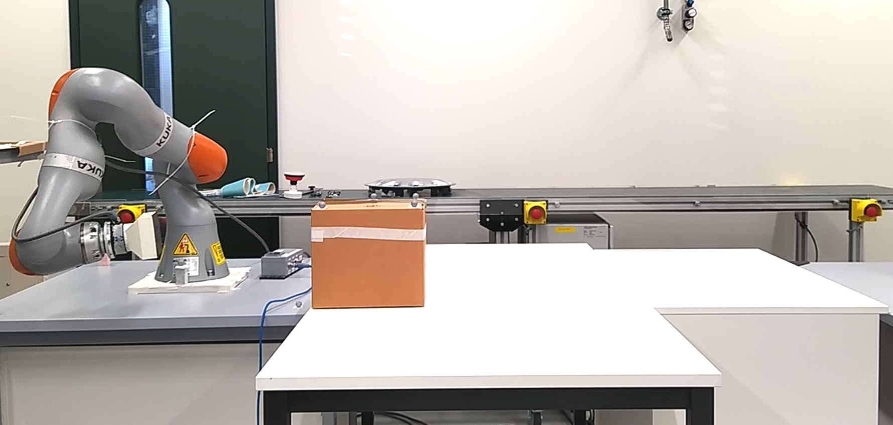
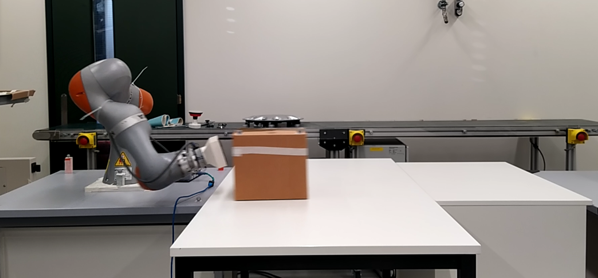
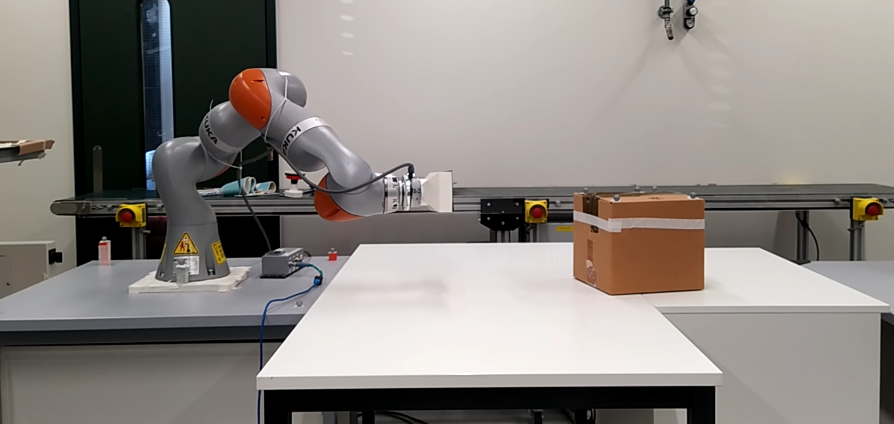

Learning & Dynamical Systems
The foundational work: learn how an object moves after a strike, then hit it so it slides to a target beyond the robot's reach.
In logistics and industry, exploiting impulsive actions (pushing, hitting, throwing) can speed up pick-and-place and let a robot place objects well beyond its natural workspace. Unlike pushing, a hit is instantaneous: the action must be chosen correctly before contact, since there is no chance to adjust once the object is released. Post-impact motion is governed by friction, drag and restitution, all known only approximately.
The forward problem — predicting where an object ends up given a hit — is easy if the dynamics are known. This paper tackles the harder inverse problem: given an object's initial and desired positions, what initial speed and direction should the robot deliver? It admits several solutions and is complicated by physical uncertainty, so the mapping is learned from data rather than modelled analytically.
A dataset of 60 real hits was collected on a KUKA LBR iiwa 7, spanning commanded speeds in [0, 2.5] m/s and directions in [−0.4, 0.4] rad. BIC selected a 3-Gaussian model; GMR then predicts the hitting speed for new targets. Repeating each desired final position five times, the robot reliably slides a box on a table of unknown friction to the requested location — demonstrating repeatable, workspace-extending manipulation through learned hitting.

Approach phase

Impact phase

Resulting object motion